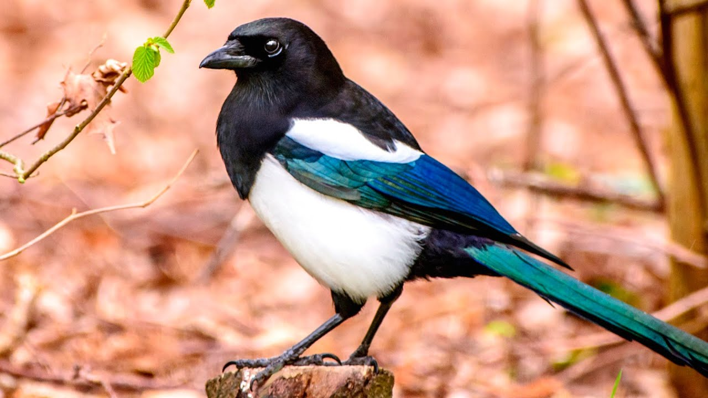

Сороки
Птица семейства вороновых с белыми перьями в крыльях, издающая характерные звуки — стрекотание. Болтливый, шумный человек, а также тот, кто любит сплетничать (преимущественно о женщине) (разговорное).
Птица семейства вороновых с белыми перьями в крыльях, издающая характерные звуки — стрекотание. Болтливый, шумный человек, а также тот, кто любит сплетничать (преимущественно о женщине) (разговорное).

Пингвин — нелетающая птица, приспособленная к охоте и нырянию в воде. Обитают в районах холодных морских течений в южном полушарии. Галапагосский пингвин частично встречается и в северном полушарии.
Синица — небольшая птица семейства синицевых отряда воробьинообразных. Для большинства синиц характерны острый короткий клюв, контрастная окраска головы, крепкие ноги с острыми изогнутыми коготками и относительно короткие крылья.
Голубь — птица семейства голубиных отряда голубеобразных.
Зяблик (лат. Fringílla coélebs) — певчая птица семейства вьюрковых.
Страус — нелетающая бескилевая птица. Единственный современный представитель семейства страусовых
Сойка (также обыкновенная сойка) — птица рода соек семейства врановых отряда воробьинообразных.

«Орёл» — собирательное название крупных дневных хищных птиц с размерами тела от среднего до крупного (за исключением грифов).

Воробьи — семейство птиц отряда воробьинообразных. Насчитывается от 27 до 35 видов. В России наиболее распространены домовый и полевой воробьи.